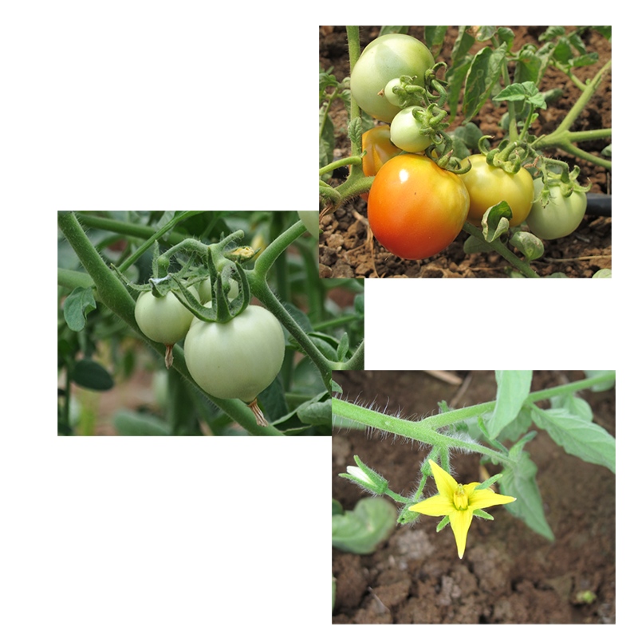

Tomato (
Lycopersicon esculentum
Mill.)
Solanaceae
Varieties and Hybrids
Seed and Nursery production
Irrigation and Manuring
Pests
Protected cultivation and yield
Season and Field preparation
Cultural practices
Fertigation
Diseases
